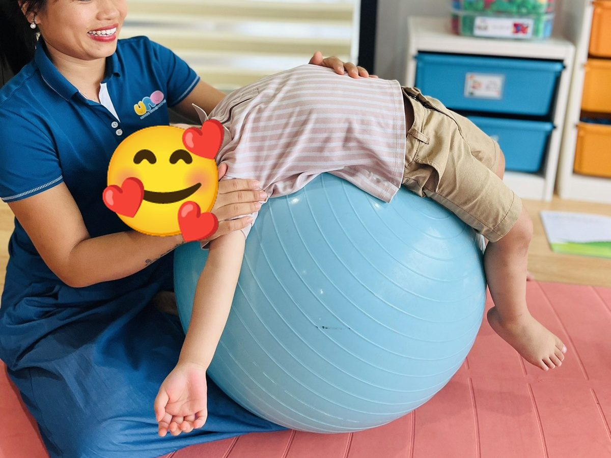
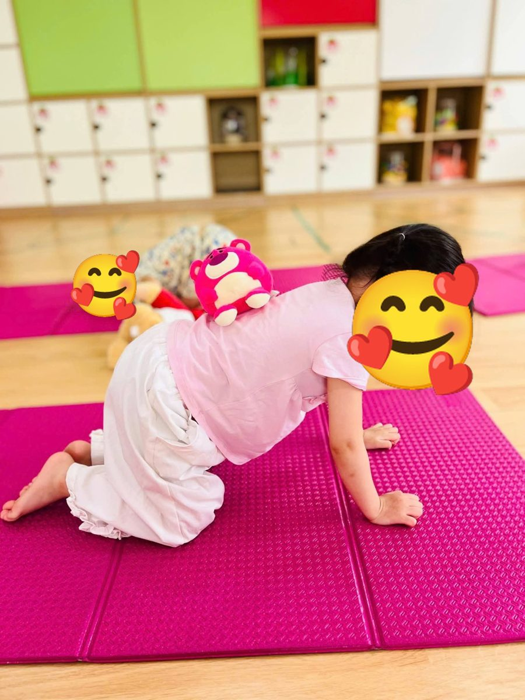
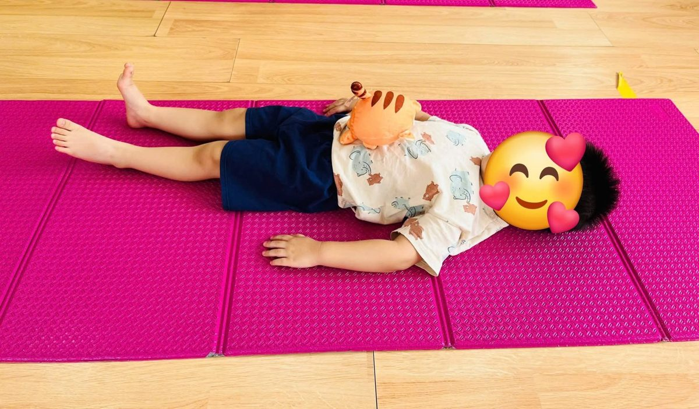

Chánh niệm
Ứng dụng yoga cân bằng phục hồi cho trẻ tự kỷ: cách hướng dẫn con tập và đồng hành cùng con

Có những bạn nhỏ bước vào lớp yoga mà không nhìn cô. Bạn đi vòng quanh mép thảm. Bịt tai khi nhạc vừa bật. Hoặc nằm úp mặt xuống thảm và không muốn dậy.
Bố mẹ đứng ngoài cửa, lo. Con có tập được không? Có làm phiền cả lớp không?
Cô từng lo như thế. Rồi cô học được rằng với những bạn nhỏ đặc biệt, câu hỏi đầu tiên không phải “con tập được bao nhiêu tư thế”. Mà là: con có thấy an toàn ở đây không. Khi con thấy an toàn, con sẽ tự đến gần. Chậm thôi. Theo cách của con.
Bài này Sophia viết cho bố mẹ và thầy cô đang ở cạnh một bạn nhỏ trong phổ tự kỷ. Gồm hai phần: cách hướng dẫn con tập, và cách đồng hành cùng con ở nhà, ở lớp.
Hiểu con trước khi dạy con
Tự kỷ không phải một bệnh để chữa khỏi. Đó là một cách não bộ phát triển khác đi, gọi đầy đủ là rối loạn phổ tự kỷ. Chữ “phổ” rất quan trọng. Có bạn chưa nói được. Có bạn nói rất nhiều, thuộc hết tên các loài khủng long. Có bạn sợ tiếng máy sấy. Có bạn lại thích được ôm thật chặt.
Điểm chung thường gặp là: con khó hơn trong giao tiếp và chơi cùng người khác, con thích những gì quen thuộc và lặp lại, và giác quan của con có thể quá nhạy (một tiếng động nhỏ cũng chói) hoặc kém nhạy (con tìm cảm giác mạnh: nhảy, xoay, va đập).
Số trẻ được chẩn đoán ngày càng nhiều, một phần vì mình hiểu và phát hiện sớm hơn. Theo Trung tâm Kiểm soát và Phòng ngừa Dịch bệnh Hoa Kỳ (CDC), cứ khoảng 31 trẻ 8 tuổi thì có 1 trẻ trong phổ tự kỷ (số liệu năm 2022, công bố năm 2025).
Có một câu của tiến sĩ Stephen Shore, một nhà giáo dục và cũng là người tự kỷ, mà cô luôn nhớ: “Nếu bạn đã gặp một người tự kỷ, thì bạn mới chỉ gặp một người tự kỷ.” Không có công thức chung. Mỗi bạn là một thế giới riêng. Vì thế những gì viết dưới đây là gợi ý để thử, quan sát, rồi điều chỉnh theo con của mình.
Yoga giúp được gì. Và không giúp được gì.
Nói thật trước: yoga không chữa tự kỷ. Con vẫn cần các chương trình can thiệp chính, như can thiệp sớm, ngôn ngữ trị liệu, hoạt động trị liệu, giáo dục đặc biệt, do bác sĩ và chuyên gia theo dõi. Yoga là một người bạn đi cùng.
Còn người bạn ấy giúp được gì, đã có vài nghiên cứu đáng đọc:
- Năm 2011, nhóm của Lisa Rosenblatt (đăng trên Journal of Alternative and Complementary Medicine) cho trẻ tự kỷ tham gia 8 tuần chương trình gồm tư thế yoga, hơi thở, âm nhạc và thư giãn. Điểm đánh giá hành vi của các con tốt lên, rõ nhất ở nhóm 5 đến 12 tuổi.
- Năm 2012, nhóm của Kimberly Koenig (tạp chí American Journal of Occupational Therapy) cho các lớp học có trẻ tự kỷ tập một chuỗi yoga ngắn mỗi sáng, suốt một học kỳ. Giáo viên ghi nhận các con ít cáu gắt, ít thu mình và ít hành vi khó hơn so với lớp không tập.
- Năm 2019, Maninderjit Kaur và Anjana Bhat (tạp chí Physical Therapy) cho thấy 8 tuần yoga sáng tạo giúp trẻ tự kỷ cải thiện kỹ năng vận động và khả năng bắt chước động tác.
Đây là những nghiên cứu nhỏ, thời gian ngắn. Các bài tổng hợp gần đây, như của Randye Semple (2019, Child and Adolescent Mental Health), đều nói rằng kết quả đáng mừng nhưng cần thêm nghiên cứu lớn hơn. Cô thấy vậy là công bằng. Ở lớp, điều cô thấy rõ nhất không nằm trong bảng điểm: một bạn lần đầu tự trải thảm, một bạn lần đầu nhìn cô bắt chước cái cây, một bạn tự về tư thế em bé khi tiếng ồn quá nhiều.
Phần 1. Cách hướng dẫn con tập
Tám nguyên tắc cô dùng. Không cần làm đủ ngay. Bắt đầu từ một, hai điều hợp với con nhất.
1. Thẻ hình thay cho lời nói
Nhiều bạn tự kỷ hiểu bằng mắt nhanh hơn bằng tai. Nhà khoa học Temple Grandin, người tự kỷ nổi tiếng thế giới, viết cả một cuốn sách tên là Thinking in Pictures (Tư duy bằng hình ảnh, 1995) để kể rằng bà nghĩ bằng hình, như xem một cuốn phim trong đầu. Chương trình TEACCH ở Đại học Bắc Carolina (Mỹ), từ những năm 1970, cũng dựa trên điều này: sắp xếp mọi thứ rõ ràng, dễ nhìn, có thứ tự.
Nên trước buổi tập, cô dán một dải thẻ hình: Chào, Núi, Cây, Thở bóng, Em bé, Nằm nghỉ. Con nhìn là biết hôm nay có gì, cái gì xong thì đến cái gì. Không bất ngờ. Không lo.
Thử ngay dưới đây. Đây là một buổi tập nhỏ, bấm được:
BÂY GIỜ
TIẾP THEO
Bấm “Xong rồi” sau mỗi bài. Đến thẻ dấu hỏi, con tự chọn Cái cây hay Con mèo. Ở thẻ Thở bóng, quả bóng sẽ to lên, nhỏ đi theo nhịp thở. Nút in cho ra 10 thẻ hình để dán lên tường hay lên tủ.
2. Ít lời. Một câu, một việc.
“Bây giờ mình sẽ đứng dậy, đưa hai tay lên cao, rồi co một chân lên như cái cây nhé” là quá nhiều với nhiều bạn. Cô chỉ nói: “Cây.” Rồi làm mẫu. Rồi chờ.
Chờ lâu hơn mình nghĩ. Cô đếm thầm đến mười. Nhiều bạn cần thời gian để nghe, hiểu, rồi mới cử động. Nhắc lại liên tục chỉ làm con rối thêm.
3. Tôn trọng giác quan của con
Đèn dịu, không nhấp nháy. Nhạc thật nhỏ, hoặc không nhạc. Không đốt tinh dầu, không xịt thơm. Một tấm thảm riêng, cùng màu, cùng chỗ mỗi buổi. Bạn nào cần tai nghe chống ồn thì cứ đeo. Bạn nào cần đi tất thì cứ đi.
Cô để ý những dấu hiệu con đang quá tải: bịt tai, nheo mắt, kêu to, chạy ra xa, lắc người nhanh hơn. Lúc đó cô giảm bớt, không thêm.
4. Không ép chạm. Hỏi trước.
Ở lớp thường, cô hay chỉnh tư thế bằng tay. Với các bạn này, cô hỏi trước: “Cô chạm vai con được không?” Hoặc giơ tay ra cho con thấy, chờ con gật. Có bạn không chịu được cái chạm nhẹ, lướt qua, nhưng lại thích một bàn tay đặt chắc, ấm, đứng yên. Temple Grandin từng tự làm cho mình một chiếc “máy ôm” để có cảm giác ép đều, vì nó giúp bà dịu lại. Mỗi con một khác. Mình hỏi, mình quan sát, rồi mình nhớ.
5. Cho con được chọn
Một buổi tập có một hai chỗ con được chọn: Cây hay Mèo? Thảm xanh hay thảm hồng? Con chỉ tay vào thẻ là đủ. Được chọn, con thấy mình có tiếng nói. Và con hợp tác hơn rất nhiều.
6. Lặp lại, quen thuộc, báo trước khi đổi
Cùng một thứ tự, cùng một câu chào, cùng một bài hát kết thúc, buổi này qua buổi khác. Người lớn thấy chán. Con thì thấy yên. Khi cần đổi, cô báo trước bằng một thẻ “đổi” và cho con xem từ đầu buổi. Thêm bài mới thì thêm từng bài một, đặt giữa hai bài con đã thích.
7. Đi từ điều con thích
Con mê tàu hỏa? Mình làm “đoàn tàu yoga”, mỗi tư thế là một ga. Con mê khủng long? Tư thế cái cây thành “khủng long cổ dài ăn lá”. Sở thích của con là cánh cửa. Mình chỉ cần gõ cửa đúng chỗ.
8. Ngắn thôi, và có góc nghỉ
Bắt đầu năm phút. Ba tư thế. Xong sớm còn hơn kéo dài đến lúc con mệt. Trong phòng luôn có một góc nghỉ: một tấm đệm, vài cái gối, có thể có tai nghe. Con được đến đó bất cứ lúc nào. Không phải góc phạt. Con ngồi đó nhìn các bạn tập, với cô, cũng là đang tham gia.
Có bạn vừa tập vừa vỗ tay, lắc người, nhảy tại chỗ. Cô không cấm. Naoki Higashida, một cậu bé tự kỷ người Nhật, viết trong cuốn The Reason I Jump (Lý do tôi nhảy) rằng khi nhảy, cậu cảm nhận cơ thể mình rõ hơn và thấy dễ chịu hơn. Những cử động ấy thường là cách con tự làm dịu mình. Chỉ cần an toàn, cô để con làm.
Video tập cùng: một buổi yoga nhỏ theo thẻ hình
Video có ô “Bây giờ” và “Tiếp theo”. Đây là cách nhiều nhà trị liệu dùng: con biết việc đang làm và việc sắp tới, nên chuyển bài dễ hơn. Bố mẹ có thể cho con xem vài lần trước khi tập thật, để con quen.
8 bài đơn giản cô hay dùng
Không cần tập hết. Chọn ba bài con thích, giữ nguyên thứ tự vài tuần. Ảnh từ lớp học thật, khuôn mặt các bé được che để bảo vệ các con. Các bài có thẻ hình là bài cô vẽ lại cho dễ nhìn.
-
Thẻ hình: Núi1
Ngọn núi
Giúp con: Cảm nhận hai bàn chân, biết mình đang đứng ở đâu.
Cách làm: Đứng trên thảm, hai bàn chân đặt lên hai dấu chân dán sẵn. Tay xuôi. Cô nói đúng một câu: “Đứng như núi.” Đếm chậm đến năm. Xong.
Điều cô để ý: Dấu chân dán trên thảm giúp con biết đứng ở đâu mà không cần ai kéo. Có bạn thích ấn mạnh bàn chân xuống sàn. Cô cho ấn. Cảm giác chắc chắn dưới chân làm nhiều bạn yên hẳn.
-
 2
2Cái cây
Giúp con: Thăng bằng, tập trung vào một điểm.
Cách làm: Một tay vịn tường hoặc vịn tay cô. Co một chân, bàn chân đặt ở mắt cá hoặc bắp chân chân kia. Tay còn lại giơ lên làm cành cây. Mắt nhìn một hình dán trên tường. Ba hơi thở, rồi đổi chân.
Điều cô để ý: Vịn tường không phải ăn gian. Là cho con cảm giác an toàn trước đã. Cây đổ thì cô chỉ nói: “Trồng lại.” Không chữ “sai”.
-

3Con mèo, con bò
Giúp con: Cột sống mềm ra, hơi thở theo nhịp chuyển động.
Cách làm: Chống hai tay, hai gối xuống thảm. Lưng cong lên như mèo (“mèo”). Lưng võng xuống, ngẩng mặt (“bò”). Mỗi lần chỉ một chữ. Lặp lại 5 lần, chậm, đều.
Điều cô để ý: Nhịp lặp lại đều đều rất hợp với nhiều bạn. Có bạn tự kêu “meo” và “ò” theo. Cô để con kêu. Tiếng của con là con đang tham gia.
-
 4
4Lăn trên bóng lớn
Giúp con: Cho cơ thể nhiều cảm giác ép, đè, đung đưa nhẹ, giúp con định vị cơ thể.
Cách làm: Con nằm sấp trên quả bóng tập lớn, hai tay chạm sàn. Người lớn giữ chắc hông con. Lăn ra trước, tay con chống xuống. Lăn về sau, chân chạm sàn. Chậm. 5 lần.
Điều cô để ý: Chỉ làm khi con thích bóng. Người lớn luôn giữ con. Bạn nào sợ, cô cho con ngồi ôm bóng, hoặc chỉ đẩy bóng lăn qua lăn lại với cô. Xem thêm Quả bóng xanh trong lớp Yoga.
-
Thẻ hình: Thở bóng5
Thở bóng
Giúp con: Thở ra dài, cơ thể chuyển sang nghỉ.
Cách làm: Hai tay chụm trước ngực như quả bóng. Hít vào bằng mũi, tay mở rộng: bóng to. Thở ra bằng miệng, tay khép lại: bóng nhỏ. Ba lần thôi. Có thể thổi một chiếc lông vũ, một con chong chóng giấy cho con thấy hơi thở của mình.
Điều cô để ý: Nhiều bạn chưa hiểu lời “thở sâu vào”. Nhưng nhìn thấy lông vũ bay thì hiểu ngay. Cô không ép thở mạnh, không ép nín thở. Bài chi tiết: Hơi thở bong bóng.
-
 6
6Em bé về tổ
Giúp con: Thu mình, nghỉ, tách khỏi những gì quá ồn quanh con.
Cách làm: Quỳ, ngồi lên gót chân, cúi người về trước, trán chạm thảm hoặc chạm gối. Ở đó bao lâu cũng được.
Điều cô để ý: Đây thường là tư thế các bạn tự tìm đến khi mệt. Cô gọi nó là “nhà”. Khi con đã quen, con tự về nhà lúc quá tải mà không cần ai nhắc.
-
Thẻ hình: Bánh mì kẹp7
Bánh mì kẹp
Giúp con: Cảm giác ép sâu, đều tay, giúp nhiều bạn dịu lại.
Cách làm: Con nằm sấp hoặc nằm ngửa trên thảm. Người lớn đặt một chiếc gối lớn lên lưng con, ấn nhẹ đều tay xuống, đếm chậm đến năm: “Kẹp bánh mì nào.” Hỏi con: “Nữa không?” Con lắc đầu là dừng.
Điều cô để ý: Không đè lên đầu, cổ. Không bao giờ dùng sức nặng của người lớn. Con luôn được nói “thôi”, và con nói thôi là thôi. Bạn nào không thích chạm, con tự ôm gối thật chặt cũng được.
-

8Nằm nghỉ cùng gấu bông
Giúp con: Kết thúc buổi tập bằng sự yên.
Cách làm: Nằm ngửa, một gấu bông nhỏ trên bụng. Hít vào gấu lên, thở ra gấu xuống. Đèn dịu. Không nhạc, hoặc một bản nhạc thật nhỏ mà con đã quen. Một đến ba phút.
Điều cô để ý: Có bạn không muốn nằm ngửa. Nằm nghiêng, nằm sấp, ngồi ôm gấu đều được. Nhắm mắt hay mở mắt cũng được. Cả bài có ở trang Yoga với gấu bông.
Phần 2. Đồng hành cùng con

Tư thế thì học vài buổi là thuộc. Đồng hành thì cả một hành trình. Và phần này, với cô, quan trọng hơn phần trên.
Bố mẹ ở nhà
Bước vào thế giới của con trước. Con đang xếp xe thành hàng? Ngồi xuống cạnh con, xếp cùng. Con đang lắc người? Lắc cùng con một chút. Khi con thấy mẹ ở trong thế giới của con, con mới muốn bước ra thế giới của mẹ.
Bình tĩnh của mẹ là chỗ dựa của con. Trẻ con, nhất là các bạn nhạy cảm, “bắt nhịp” theo hệ thần kinh của người lớn bên cạnh. Mẹ thở chậm, con cũng chậm dần. Nên trước khi tập cùng con, mẹ thở một hơi dài trước.
Mười phút, cùng giờ, cùng chỗ. Sau bữa sáng, hay trước giờ tắm. Đặt dải thẻ hình ở chỗ con nhìn thấy. Đều đặn quan trọng hơn dài.
Ghi một cuốn sổ nhỏ. Con thích bài nào. Sợ âm thanh nào. Dấu hiệu nào báo con sắp quá tải. Sau vài tuần, cuốn sổ ấy là tài liệu quý nhất về con, quý cho cả cô giáo và nhà trị liệu.
So con với con của hôm qua. Hôm nay con đứng trên thảm được ba giây. Tuần sau năm giây. Đó là tiến bộ thật. Mỗi lần như vậy, mừng cùng con, theo cách con thích: một cái đập tay, một miếng dán, một câu “con làm được rồi”.
Và chăm cả chính mình. Nuôi một bạn nhỏ đặc biệt là một chặng đường dài. Mẹ mệt là chuyện bình thường. Mẹ cũng cần những phút thở cho riêng mình. Có bài Ứng dụng yoga cân bằng phục hồi cho người căng thẳng, lo âu cô viết cho người lớn.
Khi con quá tải
Có lúc con khóc thét, nằm lăn ra, đập tay. Đó thường không phải con hư hay con làm nũng. Đó là lúc não của con nhận vào quá nhiều, tràn ra ngoài.
Lúc ấy không phải lúc tập. Cô làm ba việc: giữ an toàn cho con và các bạn, bớt kích thích (tắt nhạc, giảm đèn, ít người vây quanh), và nói thật ít. Một câu thôi: “Cô ở đây.” Rồi chờ. Khi con đã dịu, có thể mời con về tư thế em bé, hay ôm một chiếc gối thật chặt. Không giảng giải gì lúc đó. Mọi chuyện để sau.
Nếu con cáu giận, khóc lóc nhiều mà không ở trong phổ tự kỷ, bài Ứng dụng yoga cân bằng phục hồi cho bé hay cáu giận, khóc nhè, lo lắng có thể hợp hơn. Bé hiếu động, khó ngồi yên thì xem Ứng dụng yoga cân bằng phục hồi cho bé khó tập trung.
Thầy cô ở lớp
🏫 Trong lớp hòa nhập
Cho con một chỗ cố định, gần cô, xa loa và xa cửa ra vào. Ghép con với một bạn hiền làm “bạn đồng hành”. Báo trước mỗi lần chuyển hoạt động: “Còn hai lần nữa là đến Em bé.” Con tham gia một phần cũng là tham gia.
🤝 Với bố mẹ và chuyên gia
Hỏi bố mẹ về con trước buổi đầu: con thích gì, sợ gì, dùng thẻ hình hay lời nói. Dùng cùng loại thẻ, cùng từ ngữ con đang học ở trung tâm trị liệu. Cuối buổi, kể lại cho bố mẹ một điều tốt con đã làm được.
Giữa bố mẹ, cô giáo và nhà trị liệu, con chỉ có một. Ba người cùng một cách nói, cùng một bộ thẻ, con sẽ đỡ rối hơn nhiều.
Vài điều cô hay để ý
- Yoga đi cùng, không thay thế. Con vẫn theo chương trình can thiệp của bác sĩ và chuyên gia. Bố mẹ có thể kể với nhà trị liệu của con về những bài con thích, để mọi người cùng biết.
- Không thở mạnh, không nín thở. Cô không dạy các bạn kiểu thở dồn dập hay thở nhanh. Chỉ thở ra dài hơn hít vào một chút. Bạn nào có tiền sử co giật, động kinh, bố mẹ hỏi bác sĩ trước khi tập bất kỳ bài thở nào.
- Khớp quá mềm. Một số bạn có khớp rất lỏng, uốn được rất xa. Cô không cho các bạn kéo giãn hết mức. Giữ ở chỗ vừa phải là đủ.
- Không ép mắt nhắm, không ép nằm yên. Có bạn sợ bóng tối khi nhắm mắt. Mở mắt nhìn trần nhà, nhìn một hình dán cũng được.
- Không ép tham gia. Không kéo tay, không bế con lên thảm. Mời, chờ, rồi mời lại lần sau.
- Khi nào cần hỏi chuyên gia ngay. Con chậm nói rõ, mất đi những kỹ năng đã có, tự làm đau mình thường xuyên, không ngủ, không ăn: bố mẹ đưa con đi khám bác sĩ nhi, bác sĩ tâm thần nhi hoặc chuyên gia can thiệp.
Điều cô học được từ các con
Yoga, theo cách Sophia hiểu, là cân bằng lại cả năm lớp của một con người: thân thể, cảm xúc, suy nghĩ, hơi thở và tinh thần. Với các bạn nhỏ đặc biệt, điều đó càng rõ. Con được vận động cho thân thể. Được dịu lại cho cảm xúc. Được nhìn, bắt chước, chờ đến lượt cho trí. Được thở chậm. Và được chấp nhận đúng như con là, cho tinh thần.
Nếp sống quanh con cũng là một phần của buổi tập: ngủ đủ, ăn đều, ngày có nhịp, nhà có góc yên. Yoga chỉ là một mảnh nhỏ trong đó.
Các con dạy cô chậm lại. Nói ít đi. Nhìn kỹ hơn. Có những buổi cả lớp tập được mười tư thế, mà cô nhớ nhất lại là khoảnh khắc một bạn nhỏ, sau ba tuần đi vòng quanh mép thảm, tự bước vào giữa thảm và ngồi xuống.
Không cần con giống ai. Chỉ cần con thấy an toàn, và có người ngồi cạnh.
🌿 Thầy cô muốn dạy yoga cho cả những bạn nhỏ đặc biệt?
Cách đọc dấu hiệu quá tải, làm thẻ hình cho lớp, sắp xếp một buổi tập ít lời, giữ lớp hòa nhập yên mà vẫn vui… cô chia sẻ trong khóa Đào tạo Huấn luyện viên Yoga trẻ em. Bố mẹ muốn hỏi thêm về con mình thì cứ nhắn cô.
Đọc thêm: Yoga với gấu bông, Quả bóng xanh trong lớp Yoga và 10 phút massage cuối buổi.